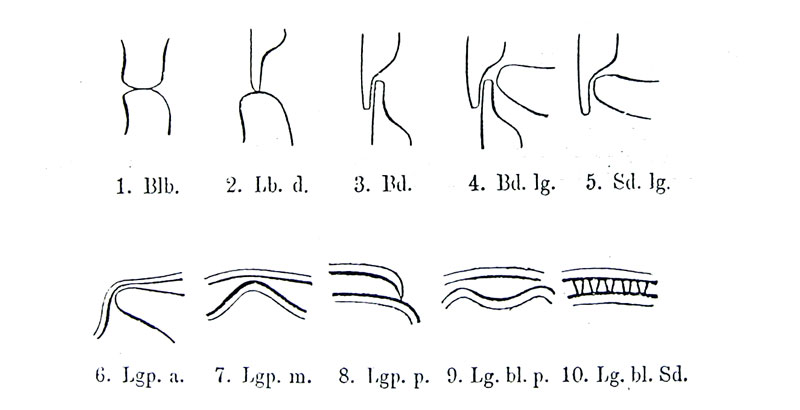

ИСТОРИЯ ФОНЕТИЧЕСКИХ ИССЛЕДОВАНИЙ
Рис.34. Артикуляции по Дю Буа-Реймону: 1) губно-губная, 2) губно-зубная, 3) зубно-зубная, 4) двузубно-язычная, 5) надзубно-язычная, 6) язычно-небная передняя, 7) язычно-небная средняя, 8) язычно-небная задняя, 9) язычно-небная двусторонняя, 10) язычно-надзубная двусторонняя.
